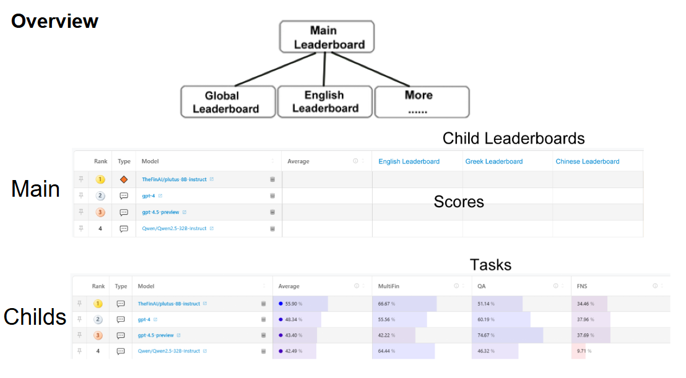

Tree Structure
Overview
Our new leaderboard system features a hierarchical structure with:
Main Leaderboard: Aggregates performance across all application scenarios
Application-Specific Leaderboards: Group tasks by real-world use cases
Main Leaderboard
{kind=link}

Fig. 13 Global performance overview showing weighted average scores across all scenarios
Application-Specific Leaderboards
Each child leaderboard represents a core business application:
Scenario |
Description |
Tasks |
|---|---|---|
Search Agent |
Enterprise search and information retrieval |
Tasks |
AI Tutor |
Educational assistance and content generation |
Tasks |
Compliance |
Regulatory monitoring and policy adherence |
Tasks |
Auditing |
Financial and operational verification |
Tasks |
Benefits
Enterprise Adoption: - Clear mapping to business functions - Pre-configured task bundles for common use cases
Technical Advantages: - Balanced evaluation across capability domains - Dynamic weighting reflects real-world priorities
User Experience: - Single-click access to relevant benchmarks - Comparable scores across related scenarios